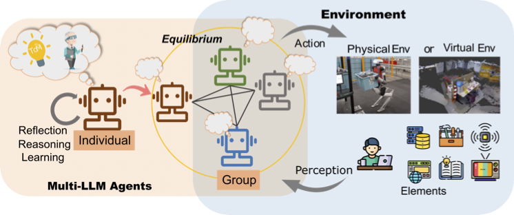
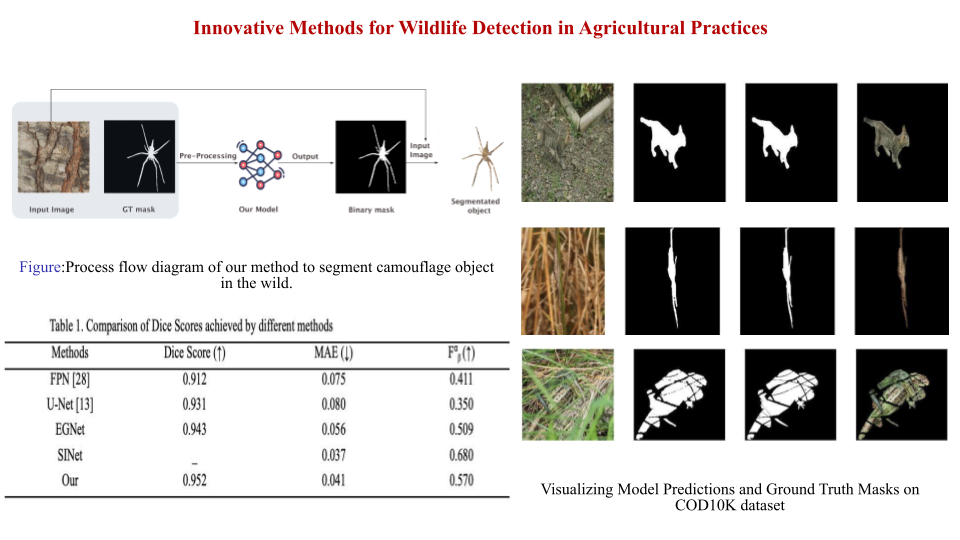
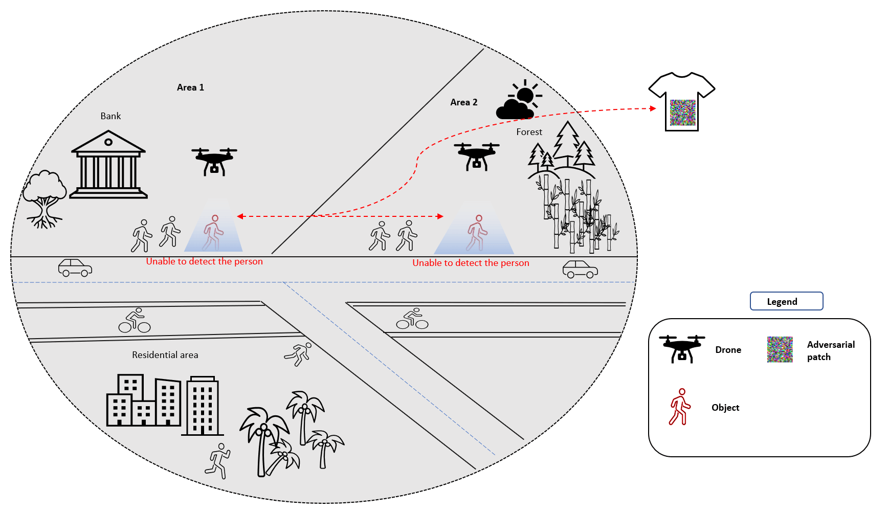
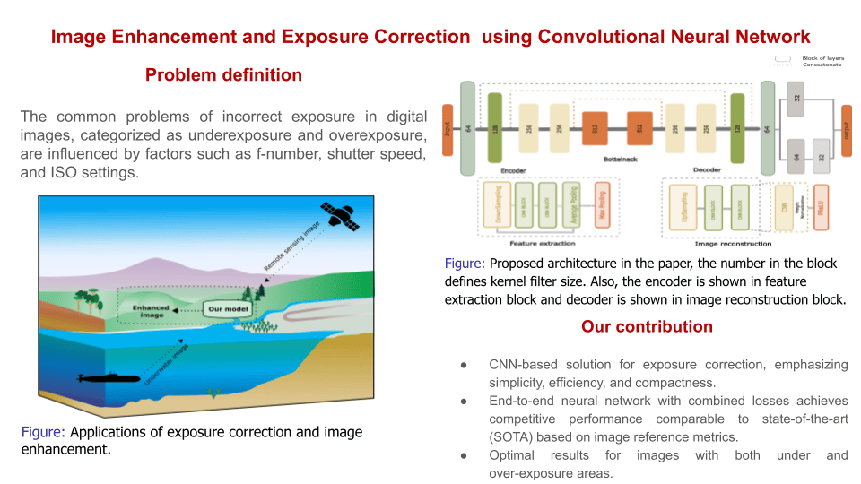
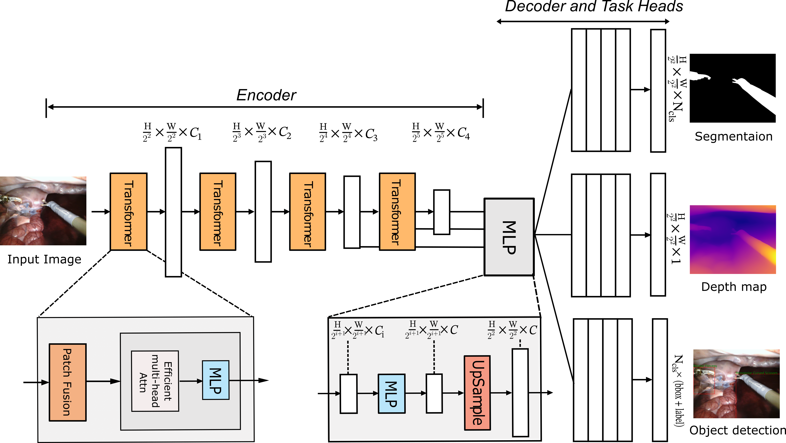
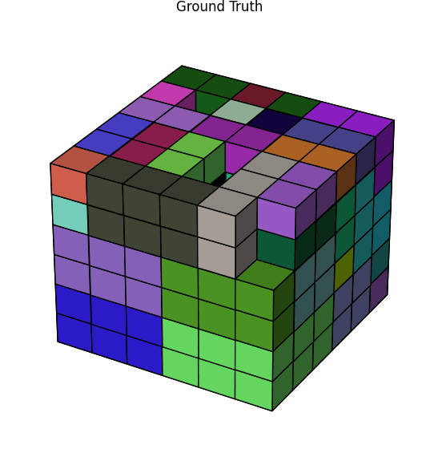
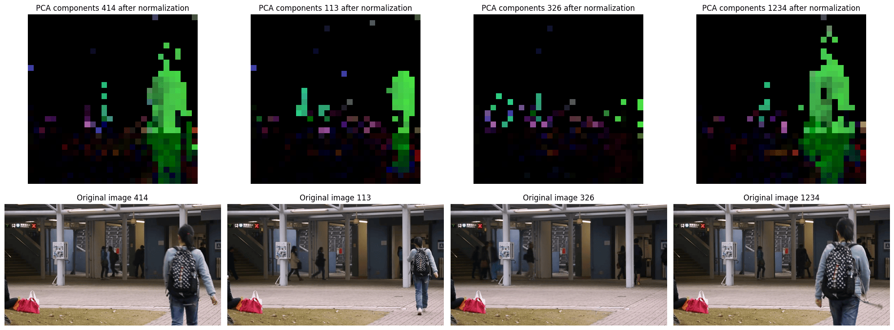
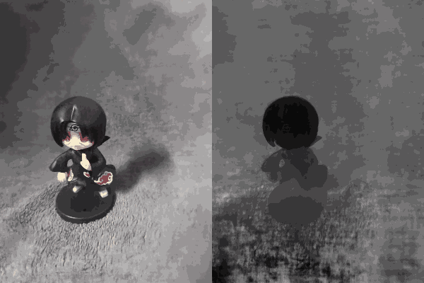

|
Mithun Parab I am Mithun Parab, a graduate with a B.Sc. in Information Technology and an M.Sc. in Computer Science. My areas of expertise include computer vision, image and video enhancement, and artificial intelligence. During my academic journey, I completed a semester-long internship at IIIT, Sri City, where I collaborated with Dr. Pavan Kumar BN. I also served as a research intern at Sejong University, working under the guidance of Y.G. Kim and Dr. Palash Ingle. |
ResearchI'm interested in computer vision, deep learning, generative AI, image/video processing and NLP. |
|

|
A Comprehensive Study on LLM Agent Challenges
Palash Ingle, Mithun Parab, Pranay Lendave, Pavan Kumar B N AAAI 2024 Spring Symposia on User-Aligned Assessment of Adaptive AI Systems. |
|

|
Innovative Method for Camouflaged Wildlife Segmentation
in Agricultural Practices
Mithun Parab, Palash Ingle IEEE Xplore Digital Library, International Conference on Advancement in Computation & Computer Technologies. DOI: 10.1109/InCACCT61598.2024.10551184 |
|

|
Adversarial Attack on 3D Fused Data in Drone
Surveillance
Amisha Bhanushali, Mithun Parab, Palash Ingle, Pavan Kumar B N IEEE Xplore Digital Library, International Conference on Advancement in Computation & Computer Technologies. DOI: 10.1109/InCACCT61598.2024.10551069 |
|

|
Image Enhancement and Exposure Correction Using
Convolutional Neural Network
Mithun Parab, Amisha Bhanushali, Palash Ingle, Pavan Kumar B N SN Computer Science, Volume 4, Number 2, 2023. DOI: 10.1007/s42979-022-01608-w |
|

|
Multi-Task Learning Network for 3D Surgical Scene
Reconstruction
Developed a multi-task learning network for 3D reconstruction of surgical scenes, utilizing dynamic weight allocation for losses to achieve an optimal equilibrium between task performances. |
|

|
Monte Carlo Tree Search with Neural Network for 3D
Bin Packing
Developed a Monte Carlo Tree Search algorithm integrated with policy and value networks for solving 3D bin packing problems, optimizing placement in dynamic packing environments. |
|

|
DINO-v2-based Method for Video Anomaly
Detection
Developed a DINO-v2-based approach for video anomaly detection, using latent feature extraction and dimensionality reduction with VAE, ICA, and PCA. Anomalies are scored with One-Class SVM or CNN, with ICA, PCA, and OC-CNN included for ablation studies. |
|

|
3D Novel View Synthesis from Un-calibrated
Images
Developed a system for synthesizing new 3D views from un-calibrated images, using a NeRF model optimized for Structure from Motion challenges via distinct MLP modules. |

|
3D Video Synopsis with Multi-task
Learning
Developed a condensed video synopsis algorithm and Multi-Task Learning network for abnormal activity segmentation and depth mapping, facilitating 3D video summary reconstruction. |
|
|
Design and source code from Jon Barron's website . |